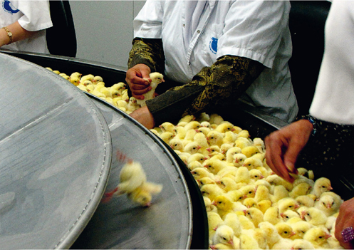
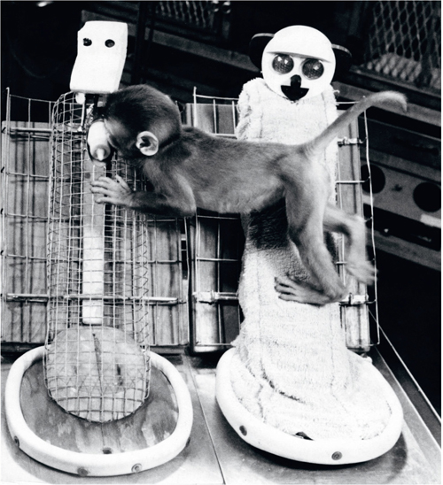

The Wheels of Industry
THE MODERN ECONOMY GROWS THANKS to our trust in the future and to the willingness of capitalists to reinvest their
profits in production. Yet that does not suffice. Economic growth also requires energy and raw materials, and these
are finite. When and if they run out, the entire system will collapse.
But the evidence provided by the past is that they are finite only in theory.
Counter-intuitively, while humankind’s use of energy and raw materials has mushroomed
in the last few centuries, the amounts available for our exploitation have actually increased.
Whenever a shortage of either has threatened to slow economic growth, investments have flowed into
scientific and technological research. These have invariably produced not only more efficient ways of
exploiting existing resources, but also completely new types of energy and materials.
Consider the vehicle industry. Over the last 300 years, humankind has manufactured billions of vehicles – from carts and wheelbarrows, to trains, cars, supersonic jets and space shuttles. One might have expected that such a prodigious effort would have exhausted the energy sources and raw materials available for vehicle production, and that today we would be scraping the bottom of the barrel. Yet the opposite is the case. Whereas in 1700 the global vehicle industry relied overwhelmingly on wood and iron, today it has at its disposal a cornucopia of new-found materials such as plastic, rubber, aluminium and titanium, none of which our ancestors even knew about. Whereas in 1700 carts were built mainly by the muscle power of carpenters and smiths, today the machines in Toyota and Boeing factories are powered by petroleum combustion engines and nuclear power stations. A similar revolution has swept almost all other fields of industry. We call it the Industrial Revolution.
For millennia prior to the Industrial Revolution, humans already knew how to make use of a large variety of energy sources. They burned wood in order to smelt iron, heat houses and bake cakes. Sailing ships harnessed wind power to move around, and watermills captured the flow of rivers to grind grain. Yet all these had clear limits and problems. Trees were not available everywhere, the wind didn’t always blow when you needed it, and water power was only useful if you lived near a river.
An even bigger problem was that people didn’t know how to convert one type of energy into another. They could harness the movement of wind and water to sail ships and push millstones, but not to heat water or smelt iron. Conversely, they could not use the heat energy produced by burning wood to make a millstone move. Humans had only one machine capable of performing such energy conversion tricks: the body. In the natural process of metabolism, the bodies of humans and other animals burn organic fuels known as food and convert the released energy into the movement of muscles. Men, women and beasts could consume grain and meat, burn up their carbohydrates and fats, and use the energy to haul a rickshaw or pull a plough.
Since human and animal bodies were the only energy conversion device available, muscle power was the key to almost all human activities. Human muscles built carts and houses, ox muscles ploughed fields, and horse muscles transported goods. The energy that fuelled these organic muscle-machines came ultimately from a single source – plants. Plants in their turn obtained their energy from the sun. By the process of photosynthesis, they captured solar energy and packed it into organic compounds. Almost everything people did throughout history was fuelled by solar energy that was captured by plants and converted into muscle power.
Human history was consequently dominated by two main cycles: the growth cycles of plants and the changing cycles of solar energy (day and night, summer and winter). When sunlight was scarce and when wheat fields were still green, humans had little energy. Granaries were empty, tax collectors were idle, soldiers found it difficult to move and fight, and kings tended to keep the peace. When the sun shone brightly and the wheat ripened, peasants harvested the crops and filled the granaries. Tax collectors hurried to take their share. Soldiers flexed their muscles and sharpened their swords. Kings convened councils and planned their next campaigns. Everyone was fuelled by solar energy – captured and packaged in wheat, rice and potatoes.
Life on the Conveyor Belt
The Industrial Revolution yielded an unprecedented combination of cheap and abundant energy and cheap and abundant raw materials. The result was an explosion in human productivity. The explosion was felt first and foremost in agriculture. Usually, when we think of the Industrial Revolution, we think of an urban landscape of smoking chimneys, or the plight of exploited coal miners sweating in the bowels of the earth. Yet the Industrial Revolution was above all else the Second Agricultural Revolution.
During the last 200 years, industrial production methods became the mainstay of agriculture. Machines such as tractors began to undertake tasks that were previously performed by muscle power, or not performed at all. Fields and animals became vastly more productive thanks to artificial fertilisers, industrial insecticides and an entire arsenal of hormones and medications. Refrigerators, ships and aeroplanes have made it possible to store produce for months, and transport it quickly and cheaply to the other side of the world. Europeans began to dine on fresh Argentinian beef and Japanese sushi.
Even plants and animals were mechanised. Around the time that Homo sapiens was elevated to divine status by humanist religions, farm animals stopped being viewed as living creatures that could feel pain and distress, and instead came to be treated as machines. Today these animals are often mass-produced in factory-like facilities, their bodies shaped in accordance with industrial needs. They pass their entire lives as cogs in a giant production line, and the length and quality of their existence is determined by the profits and losses of business corporations. Even when the industry takes care to keep them alive, reasonably healthy and well fed, it has no intrinsic interest in the animals’ social and psychological needs (except when these have a direct impact on production).
Egg-laying hens, for example, have a complex world of behavioural needs and drives. They feel strong urges to scout their environment, forage and peck around, determine social hierarchies, build nests and groom themselves. But the egg industry often locks the hens inside tiny coops, and it is not uncommon for it to squeeze four hens to a cage, each given a floor space of about twenty-five by twenty-two centimetres. The hens receive sufficient food, but they are unable to claim a territory, build a nest or engage in other natural activities. Indeed, the cage is so small that hens are often unable even to flap their wings or stand fully erect.
Pigs are among the most intelligent and inquisitive of mammals, second perhaps only to the great apes. Yet industrialised pig farms routinely confine nursing sows inside such small crates that they are literally unable to turn around (not to mention walk or forage). The sows are kept in these crates day and night for four weeks after giving birth. Their offspring are then taken away to be fattened up and the sows are impregnated with the next litter of piglets.
Many dairy cows live almost all their allotted years inside a small enclosure; standing, sitting and sleeping in their own urine and excrement. They receive their measure of food, hormones and medications from one set of machines, and get milked every few hours by another set of machines. The cow in the middle is treated as little more than a mouth that takes in raw materials and an udder that produces a commodity. Treating living creatures possessing complex emotional worlds as if they were machines is likely to cause them not only physical discomfort, but also much social stress and psychological frustration.

Chicks on a conveyor belt in a commercial hatchery. Male chicks and imperfect female chicks are picked off the conveyor belt and are then asphyxiated in gas chambers, dropped into automatic shredders, or simply thrown into the rubbish, where they are crushed to death. Hundreds of millions of chicks die each year in such hatcheries.
Just as the Atlantic slave trade did not stem from hatred towards Africans, so the modern animal industry is not motivated by animosity. Again, it is fuelled by indifference. Most people who produce and consume eggs, milk and meat rarely stop to think about the fate of the chickens, cows or pigs whose flesh and emissions they are eating. Those who do think often argue that such animals are really little different from machines, devoid of sensations and emotions, incapable of suffering. Ironically, the same scientific disciplines which shape our milk machines and egg machines have lately demonstrated beyond reasonable doubt that mammals and birds have a complex sensory and emotional make-up. They not only feel physical pain, but can also suffer from emotional distress.
Evolutionary psychology maintains that the emotional and social needs of farm animals evolved in the wild, when they were essential for survival and reproduction. For example, a wild cow had to know how to form close relations with other cows and bulls, or else she could not survive and reproduce. In order to learn the necessary skills, evolution implanted in calves – as in the young of all other social mammals – a strong desire to play (playing is the mammalian way of learning social behaviour). And it implanted in them an even stronger desire to bond with their mothers, whose milk and care were essential for survival.
What happens if farmers now take a young calf, separate her from her mother, put her in a closed cage, give her food, water and inoculations against diseases, and then, when she is old enough, inseminate her with bull sperm? From an objective perspective, this calf no longer needs either maternal bonding or playmates in order to survive and reproduce. But from a subjective perspective, the calf still feels a very strong urge to bond with her mother and to play with other calves. If these urges are not fulfilled, the calf suffers greatly. This is the basic lesson of evolutionary psychology: a need shaped in the wild continues to be felt subjectively even if it is no longer really necessary for survival and reproduction. The tragedy of industrial agriculture is that it takes great care of the objective needs of animals, while neglecting their subjective needs.
The truth of this theory has been known at least since the 1950s, when the American psychologist Harry Harlow studied the development of monkeys. Harlow separated infant monkeys from their mothers several hours after birth. The monkeys were isolated inside cages, and then raised by dummy mothers. In each cage, Harlow placed two dummy mothers. One was made of metal wires, and was fitted with a milk bottle from which the infant monkey could suck. The other was made of wood covered with cloth, which made it resemble a real monkey mother, but it provided the infant monkey with no material sustenance whatsoever. It was assumed that the infants would cling to the nourishing metal mother rather than to the barren cloth one.
To Harlow’s surprise, the infant monkeys showed a marked preference for the cloth mother, spending most of their time with her. When the two mothers were placed in close proximity, the infants held on to the cloth mother even while they reached over to suck milk from the metal mother. Harlow suspected that perhaps the infants did so because they were cold. So he fitted an electric bulb inside the wire mother, which now radiated heat. Most of the monkeys, except for the very young ones, continued to prefer the cloth mother.

One of Harlow’s orphaned monkeys clings to the cloth mother even while sucking milk from the metal mother.
Follow-up research showed that Harlow’s orphaned monkeys grew up to be emotionally disturbed even though they had received all the nourishment they required. They never fitted into monkey society, had difficulties communicating with other monkeys, and suffered from high levels of anxiety and aggression. The conclusion was inescapable: monkeys must have psychological needs and desires that go beyond their material requirements, and if these are not fulfilled, they will suffer greatly. Harlow’s infant monkeys preferred to spend their time in the hands of the barren cloth mother because they were looking for an emotional bond and not only for milk. In the following decades, numerous studies showed that this conclusion applies not only to monkeys, but to other mammals, as well as birds. At present, millions of farm animals are subjected to the same conditions as Harlow’s monkeys, as farmers routinely separate calves, kids and other youngsters from their mothers, to be raised in isolation.
Altogether, tens of billions of farm animals live today as part of a mechanised assembly line, and about 50 billion of them are slaughtered annually. These industrial livestock methods have led to a sharp increase in agricultural production and in human food reserves. Together with the mechanisation of plant cultivation, industrial animal husbandry is the basis for the entire modern socio-economic order. Before the industrialisation of agriculture, most of the food produced in fields and farms was ‘wasted’ feeding peasants and farmyard animals. Only a small percentage was available to feed artisans, teachers, priests and bureaucrats. Consequently, in almost all societies peasants comprised more than 90 per cent of the population. Following the industrialisation of agriculture, a shrinking number of farmers was enough to feed a growing number of clerks and factory hands. Today in the United States, only 2 per cent of the population makes a living from agriculture, yet this 2 per cent produces enough not only to feed the entire US population, but also to export surpluses to the rest of the world.9 Without the industrialisation of agriculture the urban Industrial Revolution could never have taken place – there would not have been enough hands and brains to staff factories and offices.
As those factories and offices absorbed the billions of hands and brains that were released from fieldwork, they began pouring out an unprecedented avalanche of products. Humans now produce far more steel, manufacture much more clothing, and build many more structures than ever before. In addition, they produce a mind-boggling array of previously unimaginable goods, such as light bulbs, mobile phones, cameras and dishwashers. For the first time in human history, supply began to outstrip demand. And an entirely new problem was born: who is going to buy all this stuff?
The Age of Shopping
The modern capitalist economy must constantly increase production if it is to survive, like a shark that must swim or suffocate. Yet it’s not enough just to produce. Somebody must also buy the products, or industrialists and investors alike will go bust. To prevent this catastrophe and to make sure that people will always buy whatever new stuff industry produces, a new kind of ethic appeared: consumerism.
Most people throughout history lived under conditions of scarcity. Frugality was thus their watchword. The austere ethics of the Puritans and Spartans are but two famous examples. A good person avoided luxuries, never threw food away, and patched up torn trousers instead of buying a new pair. Only kings and nobles allowed themselves to renounce such values publicly and conspicuously flaunt their riches.
Consumerism sees the consumption of ever more products and services as a positive thing. It encourages people to treat themselves, spoil themselves, and even kill themselves slowly by overconsumption. Frugality is a disease to be cured. You don’t have to look far to see the consumer ethic in action – just read the back of a cereal box. Here’s a quote from a box of one of my favourite breakfast cereals, produced by an Israeli firm, Telma:
Sometimes you need a treat. Sometimes you need a little extra energy. There are times to watch your weight and times when you’ve just got to have something … right now! Telma offers a variety of tasty cereals just for you – treats without remorse.
The same package sports an ad for another brand of cereal called Health Treats:
Health Treats offers lots of grains, fruits and nuts for an experience that combines taste, pleasure and health. For an enjoyable treat in the middle of the day, suitable for a healthy lifestyle. A real treat with the wonderful taste of more [emphasis in the original].
Throughout most of history, people were likely to be have been repelled rather than attracted by such a text. They would have branded it as selfish, decadent and morally corrupt. Consumerism has worked very hard, with the help of popular psychology (‘Just do it!’) to convince people that indulgence is good for you, whereas frugality is self-oppression.
It has succeeded. We are all good consumers. We buy countless products that we don’t really need, and that until yesterday we didn’t know existed. Manufacturers deliberately design short-term goods and invent new and unnecessary models of perfectly satisfactory products that we must purchase in order to stay ‘in’. Shopping has become a favourite pastime, and consumer goods have become essential mediators in relationships between family members, spouses and friends. Religious holidays such as Christmas have become shopping festivals. In the United States, even Memorial Day – originally a solemn day for remembering fallen soldiers – is now an occasion for special sales. Most people mark this day by going shopping, perhaps to prove that the defenders of freedom did not die in vain.
The flowering of the consumerist ethic is manifested most clearly in the food market. Traditional agricultural societies lived in the awful shade of starvation. In the affluent world of today one of the leading health problems is obesity, which strikes the poor (who stuff themselves with hamburgers and pizzas) even more severely than the rich (who eat organic salads and fruit smoothies). Each year the US population spends more money on diets than the amount needed to feed all the hungry people in the rest of the world. Obesity is a double victory for consumerism. Instead of eating little, which will lead to economic contraction, people eat too much and then buy diet products – contributing to economic growth twice over.
How can we square the consumerist ethic with the capitalist ethic of the business person, according to which profits should not be wasted, and should instead be reinvested in production? It’s simple. As in previous eras, there is today a division of labour between the elite and the masses. In medieval Europe, aristocrats spent their money carelessly on extravagant luxuries, whereas peasants lived frugally, minding every penny. Today, the tables have turned. The rich take great care managing their assets and investments, while the less well heeled go into debt buying cars and televisions they don’t really need.
The capitalist and consumerist ethics are two sides of the same coin, a merger of two commandments. The supreme commandment of the rich is ‘Invest!’ The supreme commandment of the rest of us is ‘Buy!’
The capitalist-consumerist ethic is revolutionary in another respect. Most previous ethical systems presented people with a pretty tough deal. They were promised paradise, but only if they cultivated compassion and tolerance, overcame craving and anger, and restrained their selfish interests. This was too tough for most. The history of ethics is a sad tale of wonderful ideals that nobody can live up to. Most Christians did not imitate Christ, most Buddhists failed to follow Buddha, and most Confucians would have caused Confucius a temper tantrum.
In contrast, most people today successfully live up to the capitalist-consumerist ideal. The new ethic promises paradise on condition that the rich remain greedy and spend their time making more money, and that the masses give free rein to their cravings and passions – and buy more and more. This is the first religion in history whose followers actually do what they are asked to do. How, though, do we know that we’ll really get paradise in return? We’ve seen it on television.


:max_bytes(150000):strip_icc():format(webp)/inventor-karl-benz-sitting-on-benz-motorwagen-514911328-5c2137a6c9e77c00015a787c.jpg)


/cdn.vox-cdn.com/uploads/chorus_image/image/66623435/GettyImages_1209479965.0.jpg)